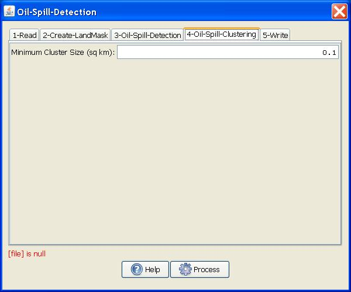

Oil Spill Detection
The operator detects dark spot such as oil spill on sea surface from SAR imagery.Major Processing Steps
The oil spill detection operation consists of the following four operations:
- Pre-processing: Calibration and speckle filtering are applied to source image in this step.
- Land-sea masking: Land-sea mask is created in this step to ensure that detection is focused only on area of interest.
- Dark spot detection: Dark spots are detected in this step with an adaptive thresholding method.
- Clustering and discrimination:
Pixels detected as part of the dark spot are clustered and then
eliminated based on the dimension of the cluster and user selected
minimum cluster size.
For details of calibration and speckle filtering operations, the readers are referred to the Calibration operator and the Speckle Filter operator.
Here it is assumed that the calibration and speckle filtering have
been performed before applying the oil spill detection operator.
For details of land-sea mask generation, the readers are referred to the Create Land Mask operator.
Adaptive Threshold Algorithm
The dark spots are detected using an adaptive thresholding method.
- First the local mean backscatter level is estimated using
pixels in a large window.
- Then the detecting threshold is set
k decibel below the estimated local mean backscatter level. Pixels
within the window with values lower than the threshold are detected as
dark spot. k is a user selected parameter (see parameter Threshold
Shift below).
- Shift the window to next window position and repeat step 1 and 2.
Discrimination
- First the contiguous detected pixels are clustered into a single cluster.
- Then clusters with their sizes smaller than user selected Minimum Cluster Size are eliminated.
Visualize Detected Oil Spill
The oil spill detection bit
mask is output as a separated band. To view the oil spill detection
results, the following steps should be followed:
- Bring up the image.
- Go to Layer Manager and add the oil spill bit mask band as a layer.
Parameters Used
For dark spot detection, the following parameters are used (see figure 1):
- Source Bands: All bands (real or virtual) of the source product.
User can select one or more bands for producing multi-looked images. If
no bands are selected, then by default all bands are selected.
- Background Window Size: The window size in pixels for computing local mean backscatter level.
- Threshold Shift (dB): The detecting threshold is lower than the local mean backscatter level by this amount.

Figure 1. Oil Spill Detection Operator dialog box.
For clustering and discrimination, the following parameters are used (see Figure 2):
- Minimum
Cluster Size: The minimum cluster size in square kilometer.
Cluster with size smaller than this size is eliminated.

Figure 2. Oil Spill Clustering operator dialog box.
Reference:
[1] A. S. Solberg, C. Brekke and R. Solberg, "Algorithms
for oil spill detection in Radarsat and ENVISAT SAR images",
Geoscience and Remote Sensing Symposium, 2004. IGARSS '04. Proceedings.
2004 IEEE International, 20-24 Sept. 2004, page 4909-4912, vol.7.